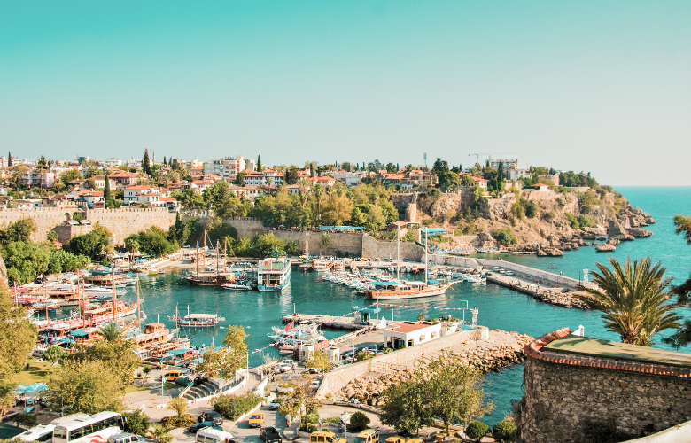
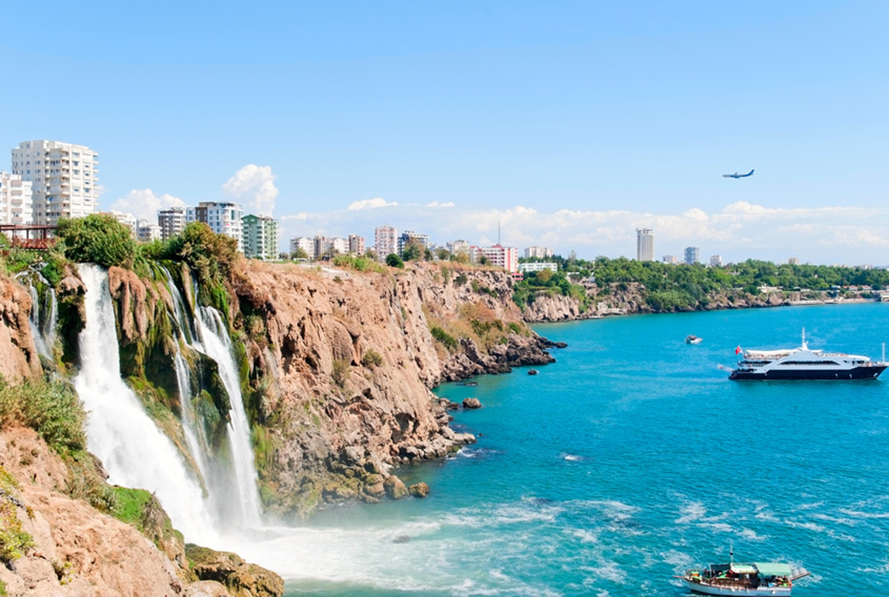
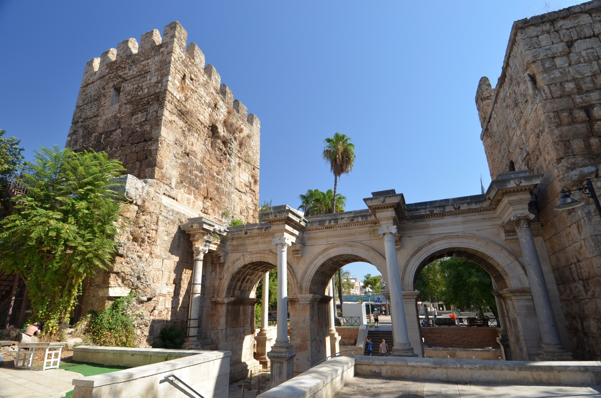
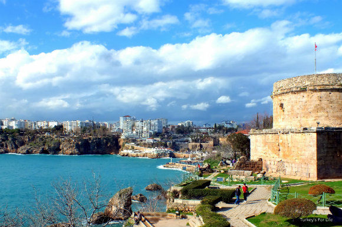
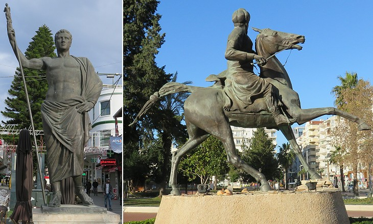
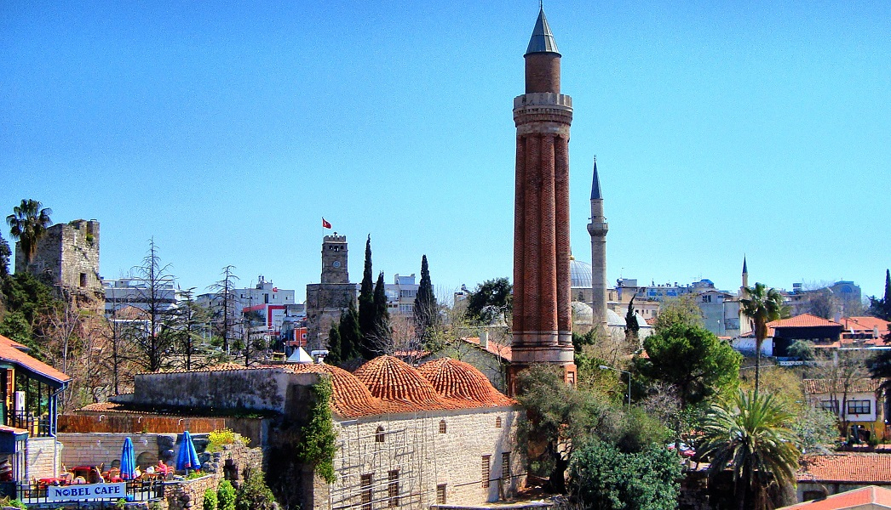

Antalija je grad u Turskoj u vilajetu Antalija. Nalazi se na mediteranskoj obali. To je glavni grad plodne primorske ravnice na jugozapadu Male Azije. Danas je ovo područje zbog bogate i organizovane turističke ponude poznato kao „Turska rivijera“. Prema proceni iz 2009. u gradu je živelo 945.049 stanovnika. Grad je 158. godine p. n. e. osnovao kralj Atal II od Pergamona. Po njemu je grad dobio ime Ataleja. Smatra se da je ovu važnu luku posetio apostol Pavle 48. godine nove ere. Gradom su vladali Rimljani, Vizantinci i Seldžuci (od početka 13. veka).
 Istorija: Kralj Atalus II iz Pergamona se smatra osnivačem grada oko 150. godine pne, za vreme helenističkog perioda. U njegovu čast imenovana je Ataleja ili Atalija. Grad je služio kao pomorska baza za moćnu flotu Atalusa. Iskopavanja 2008.-e godine na Dogu Garaji placu otkrila su ostatke iz 3. veka pre nove ere, ukazujući da je Atalea bila rekonstrukcija i proširenje ranijeg grada. Atalea je postao deo rimske republike u 133. pne., Kada je Atalus III, nećak Atalusa Kralj Atalus II iz Pergamona se smatra osnivačem grada oko 150. godine pne, za vreme helenističkog perioda. U njegovu čast imenovana je Ataleja ili Atalija. Grad je služio kao pomorska baza za moćnu flotu Atalusa. Iskopavanja 2008.-e godine na Dogu Garaji placu otkrila su ostatke iz 3. veka pre nove ere, ukazujući da je Atalea bila rekonstrukcija i proširenje ranijeg grada. Atalea je postao deo rimske republike u 133. pne., Kada je Atalus III, nećak Atalusa II, predao je kraljevstvo Rimu na svojoj samrti 133. pne. Grad se razvijao i prosperirao tokom rimskog perioda kada je bio deo rimske pokrajine Pampilia Secunda, čiji je glavni grad bio Perga. Hrišćanstvo je počelo da se širi u regiju od 1. veku: Antaliju je posetio Pavle Tarsus i Barnabas, kako je zapisano u Apostolskim spisima: "Onda su prošli kroz Pisidiju i došli u Pampiliju. I kada su govorili reč u Pergi, otišli su u Ataliju, a odatle su otplovili u Antiohiju. Seljukova džamija iz 13. veka u Ataliji, koja je sada u ruševinama, bila je hrišćanska vizantijska bazilika iz 7-og veka. Velika džamija je isto bila hrišćanska bazilika, a džamija Kesik Minare bila je hrišćanska crkva Panagije ili Device iz 5. veka i ukrašena je fino uklesanim mermerom. Arheološki muzej u Ataliji ima nekoliko sarkofaga i mozaika iz okoline Perga i kostur koji je poznat kao sveti Nikola, episkop Mire. Antalija je bila glavni grad u Vizantijskom carstvu. To je bio glavni grad vizantijske teme Cibirheots, koji je obuhvatao južne obale Anatolije. Prema istraživanju Sperosa Vrionisa, to je bila glavna pomorska stanica na južnoj Anatolskoj obali, glavnom komercijalnom centru, i najprikladnija luka između Egejskog mora i Kipra.
   